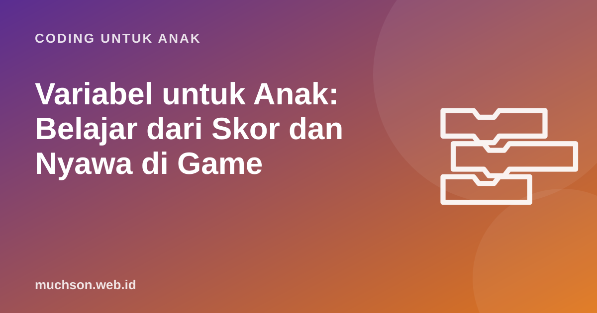

Beranda › Artikel › Coding untuk Anak
Coding untuk AnakVariabel untuk Anak: Belajar dari Skor dan Nyawa di Game
Variabel sering dianggap konsep yang sulit, padahal anak sudah memakainya setiap kali bermain: skor, jumlah nyawa, koin yang terkumpul, waktu tersisa. Artikel ini membantu Anda menjelaskan variabel dengan analogi yang melekat, menunjukkan cara memakainya di Scratch, dan memberi latihan untuk dicoba bersama.

Analogi kotak bernama
"Variabel itu seperti kotak yang diberi nama. Di dalam kotak ada angka atau kata. Isinya bisa diganti kapan saja, tapi nama kotaknya tetap."
Ambil beberapa kotak atau gelas plastik, tempel label "skor", "nyawa", dan "nama". Masukkan kertas bertuliskan angka atau kata. Lalu mainkan: "Kamu menangkap bintang! Ambil kertas di kotak skor, tambahkan 1, masukkan lagi." Peragaan fisik ini membuat konsep abstrak menjadi nyata, dan anak ingat bahwa variabel hanya menyimpan satu nilai pada satu waktu.
Variabel di game yang anak kenal
| Variabel | Nilai awal | Berubah saat ... | Dipakai untuk ... |
|---|---|---|---|
| skor | 0 | menangkap koin (+1) | menampilkan prestasi, naik level |
| nyawa | 3 | menabrak musuh (−1) | game selesai saat 0 |
| waktu | 60 | setiap detik (−1) | membatasi permainan |
| level | 1 | skor mencapai target (+1) | menambah kecepatan musuh |
| nama | (kosong) | pemain mengetik namanya | menyapa "Halo, Dina!" |
Ajak anak mengamati game favoritnya dan menyebutkan variabel-variabelnya. Pertanyaan "angka apa saja yang berubah di layar?" sudah cukup untuk memulai.
Tiga hal yang selalu dilakukan dengan variabel
Ada detail kecil yang sering membingungkan: "atur ke" mengganti isi kotak dengan nilai baru, sedangkan "ubah sebesar" menambah (atau mengurangi bila angkanya negatif) isi yang sudah ada. Skor 7 lalu "atur skor ke 1" hasilnya 1. Skor 7 lalu "ubah skor sebesar 1" hasilnya 8.
Coba sendiri: simulasi skor
Tipe nilai: angka dan teks
Variabel bisa berisi angka (3, 100, −5) atau teks ("Dina", "halo"). Anak kelas atas SD perlu tahu bedanya karena operasi yang bisa dilakukan berbeda. Angka bisa dijumlahkan; teks bisa disambung. Di Scratch, blok gabung menyambung teks: gabung "Halo, " dengan nama menjadi "Halo, Dina".
Kesalahan umum dan cara membantunya
Hubungan dengan matematika sekolah
Variabel di coding membuka jalan ke aljabar. Ketika kelak anak bertemu "x + 3 = 10", ia sudah punya bayangan bahwa x adalah wadah yang menyimpan nilai. Bedanya, di matematika x biasanya dicari, sedangkan di coding variabel diisi dan diubah. Bila Anda ingin memperkenalkan variabel dengan alur yang bertahap, kurikulum PixelKode menaruhnya di modul 5, setelah anak nyaman dengan loop, kejadian, koordinat, dan kondisi.
Tanya jawab
Apa itu variabel untuk anak SD?
Apa beda "atur ke" dan "ubah sebesar" di Scratch?
Kenapa skor game anak saya tidak kembali ke nol?
Apakah variabel sama dengan x di matematika?
Sumber dan bacaan lanjut
- Scratch untuk pendidik
- Brennan & Resnick (2012). Kerangka berpikir komputasional (konsep data)
- Scherer dkk. (2019). Meta-analisis manfaat belajar pemrograman